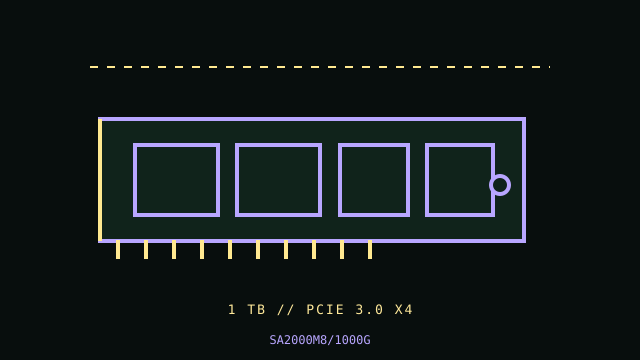

[ PCIE 3.0 NVME // IDENTIFIED PRODUCT ]
Kingston A2000 1 TB (SA2000M8/1000G)
Product-specific catalog record for the manufacturer code below. Performance figures are manufacturer-rated values, not independent test results.

IDENTIFY THE EXACT SKU: Compare the full MPN, label suffix, form factor, firmware and any OEM/security code before applying these notes. Family variations, capacity changes and factory thermal assemblies can materially change ratings and compatibility.
Manufacturer-identified specifications
| Product / MPN | Kingston A2000 1 TB (SA2000M8/1000G) — SA2000M8/1000G |
|---|---|
| Capacity / form factor | 1 TB; M.2 2280, bare module. |
| Interface / lane width | PCIe 3.0 x4. |
| Protocol | NVMe 1.3. |
| Rated performance / endurance | Up to 2,200 MB/s sequential read and 2,000 MB/s write; 600 TBW for 1 TB SKU. |
| Heatsink / revision caveat | Bare M.2 module; no factory heatsink. Keep any motherboard thermal pad correctly aligned and avoid bending the card. A2000 is an older client NVMe family. Kingston’s datasheet lists different performance by capacity; these figures apply to 1 TB, not all A2000 capacities. Verify the full SA2000M8 suffix and firmware. |
Compatibility, installation & service
- Use Kingston’s datasheet and the computer service manual to confirm M.2 2280 PCIe/NVMe support, boot firmware, module clearance and shared lanes. Ensure the retention screw is correct and finger-tight; do not hot-plug. Back up data and record SMART/firmware before maintenance; check Kingston support for current utility and warranty status.
- A2000 is an older client NVMe family. Kingston’s datasheet lists different performance by capacity; these figures apply to 1 TB, not all A2000 capacities. Verify the full SA2000M8 suffix and firmware.
- Confirm host boot mode, OS NVMe support, CPU lane generation, socket length/keying, power and controller/backplane qualification from the system manual; physical fit alone does not establish compatibility.
- Before drive replacement, check backup integrity, encryption keys, firmware settings, recovery media and array rebuild plans. Use electrostatic-discharge precautions and never hot-remove unless the host documentation explicitly supports it.
Manufacturer references
- Kingston A2000 — manufacturer datasheet (capacity-specific specification table)Manufacturer specification/product reference. Verify the precise SKU and its capacity-specific table, manual or linked downloads against the installed drive label.
- NVM Express — specificationsProtocol standards reference; it does not establish product-specific features or host boot support.
- PCI-SIG — PCI Express specificationsInterface generation/lanes standards reference, not a substitute for the host motherboard/server manual.
Manufacturer peak ratings reflect stated test conditions and may not represent sustained writes in a thermally constrained or cache-exhausted host. Confirm current regional support, service status and warranty terms before use.